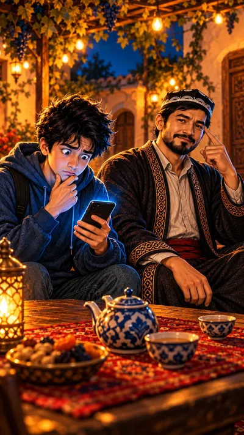

11-sahna — 9:16 (tik), 6 s

Ovoz
Diyor: «Demak, ‘bepul’ so'zi miyani aldaydi?» — Usta: «Aldamaydi. Shoshiltiradi.»
Kamera: ikkalasiga sekin, yengil yaqinlashishVertical 9:16, 6 seconds. Start from the attached image. Camera: slow gentle push-in toward both men, no arc, no cut. Diyor lifts his eyes from the phone to Usta and asks, puzzled, finger on his chin, and keeps holding the phone in his other hand for the whole clip. Usta taps his temple twice and answers calmly with a small smile; Diyor listens, mouth closed, and slowly nods. Diyor says in Uzbek, in a lighter young male voice of about 22: "Demak, bepul so'zi miyani aldaydi?" Usta says in Uzbek, in a calm deep warm male voice of about 30-35: "Aldamaydi. Shoshiltiradi." Keep both characters exactly as in the image: Usta about 30, smooth young skin, short full black beard, black doppi with a white arch pattern, dark embroidered chapan with a red sash; Diyor about 20, round boyish face, messy jet-black hair, navy hoodie. Same faces, five fingers on each hand. One continuous shot, no cuts. Faces stay exactly as in the image from the first to the last frame. Keep the hand-painted cartoon style of the image for the whole clip, never photorealistic. No text, no subtitles, no captions, no logos. The camera never stops moving.